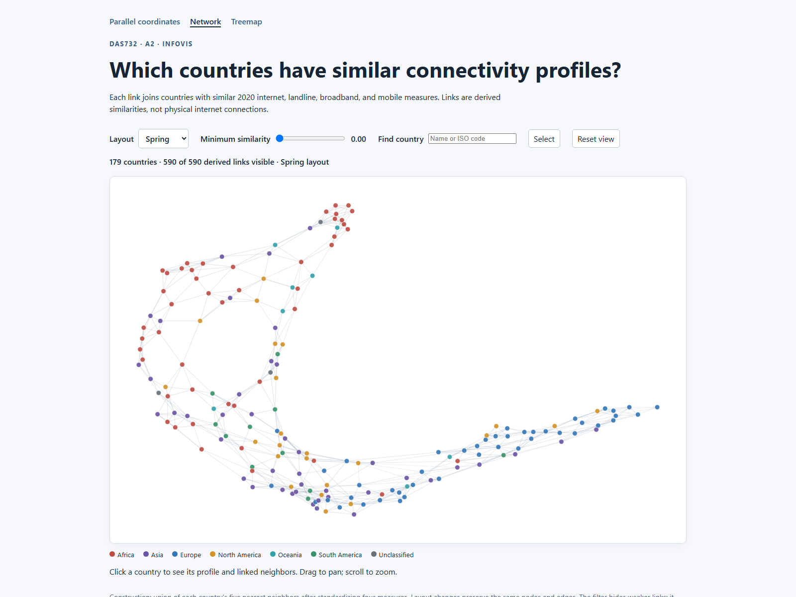
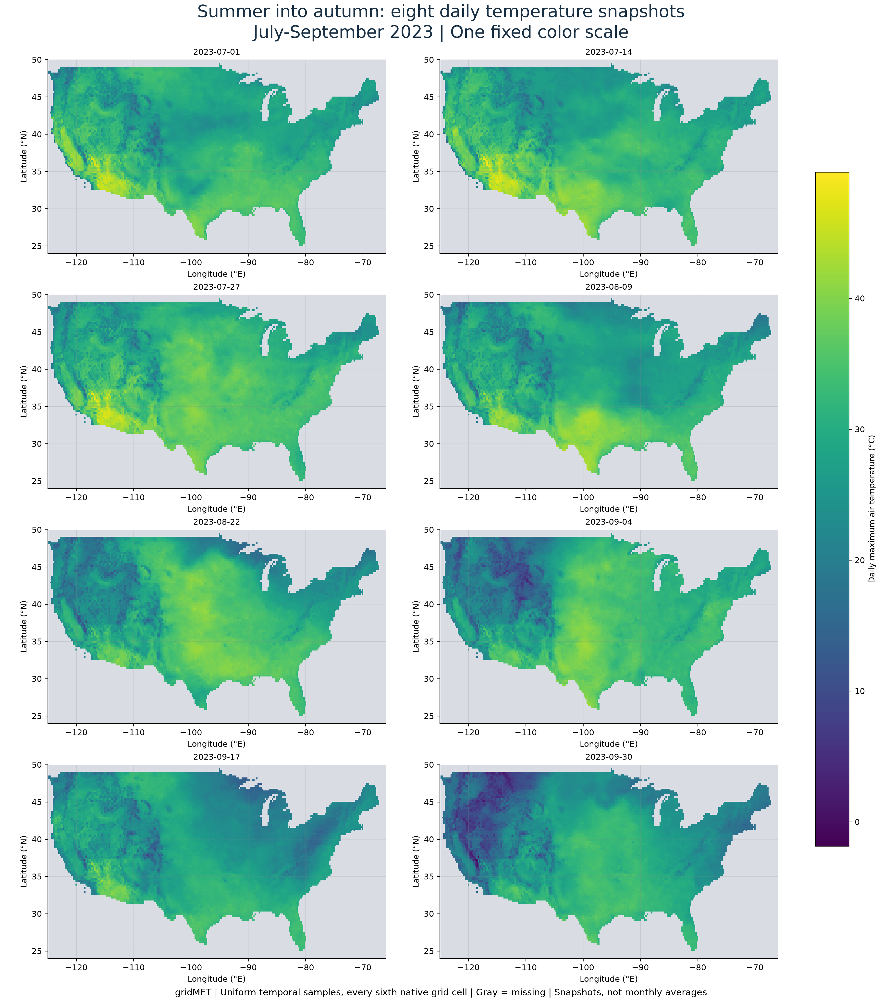
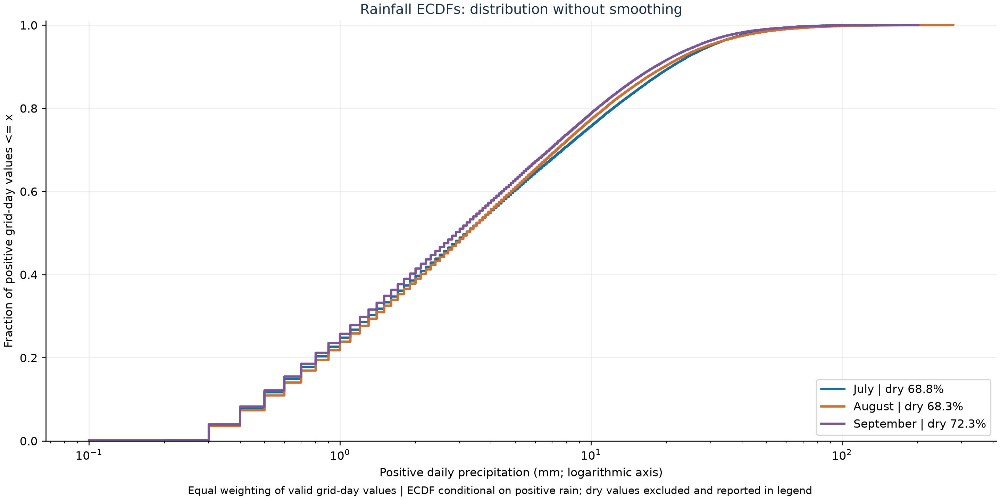
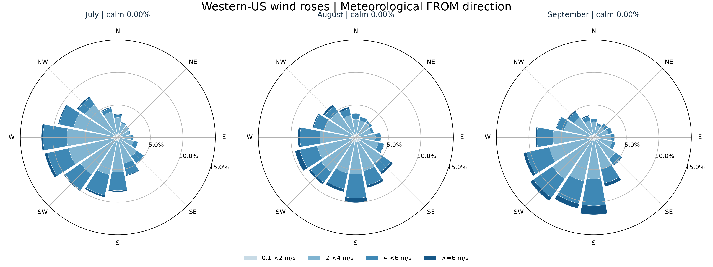
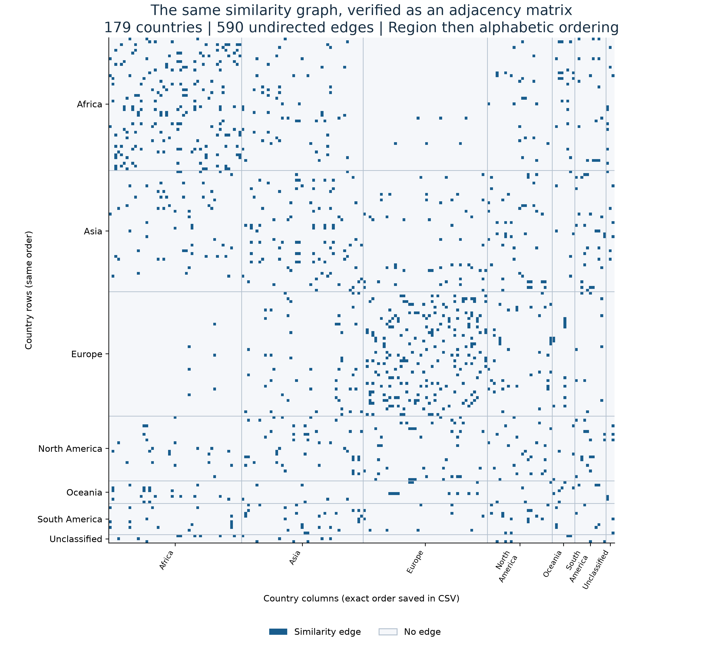
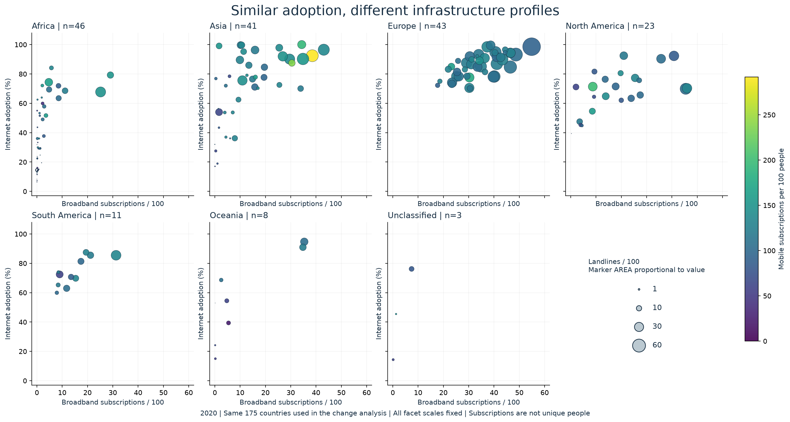
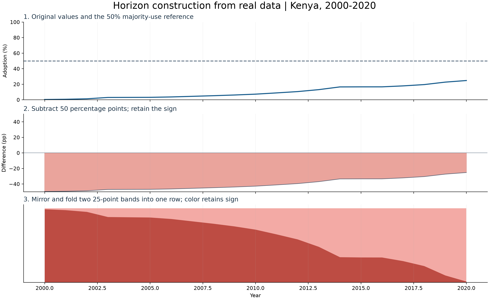
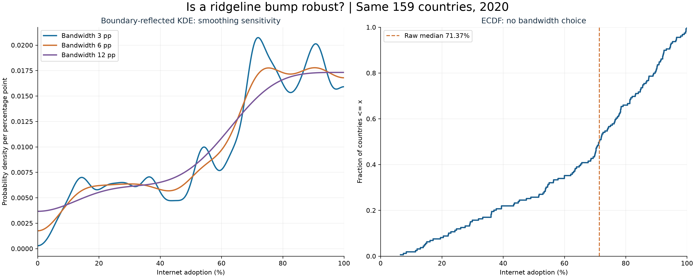

Simple-English revision: NodeTrix detail (Figure 3), six-country paths (Figures 4–5), regional change counts (Figure 7), within-region variation (Figure 11) and weather overlap bars (Figure 29). Supporting checks and other trials remain in companion galleries.
Full changes and mapping | Current figures and companion material | Current PDF | Original report
Interactive screenshot overlaps the three-layout overview; working network page retained.

Eight-date atlas omitted; all three required eight-frame GIFs retained.

Positive-rain conditional distributions provide limited separation; original retained here.

Replaced by full-domain monthly wind roses. Spatial support and near-calm handling differ.

Moved from PDF appendix to companion gallery: exact adjacency lookup remains available.

Bubble overview retained here; PCP and SPLOM provide more precise comparisons.

Moved from PDF appendix to companion gallery: worked horizon construction remains available.

Moved from PDF appendix to companion gallery: KDE sensitivity remains available.
